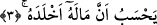
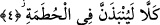

“Onu sayar” kelimesinin mânâsı; o maldaki Allah’ın hakkını edâ etmeksizin onu
tekrar tekrar sayar durur, demektir.
Bâzı âlimlere göre “addedeh” fiili, hazırlık yapmak mânâsınadır; yâni malını zamanın
belâlarına karşı bir azık olarak hazırlar.
Yukarıda zikredilen Ahnes’in dört bin dînârı ve onbin dirhemi vardı.
Öte yandan âyet-i kerimede, “toplamak” fiilinin kullanılması, kuvve-i şehevânîye,
malı gelecek musîbetler için azık olarak hazırlamak da cehâlet olduğuna işâret
etmektedir. Çünkü musîbet halleri için mal biriktiren kimse bilmiyor ki başına belâyı
getiren, bizâtihî o malın kendisidir. Çünkü Allah Teâlâ’nın hikmeti o malın bir takım
belâlarla birlikte dağıtılmasını gerektirmektedir. O hâlde o mal ondan bu belâları nasıl
defedebilsin ki?!
et-Te’vîlâtü’n-Necmiyye’de şöyle denir: Kötü ahlâk ve çirkin vasıflardan müteşekkil
malı toplamak ve bunları âhiret menzilleri ile Cenâb-ı Hakk’ın huzûruna varmak için
azık olarak hazırlamak…
3. (O), malının kendisini ebedî kılacağını zanneder.
Bu âyette “mal” kelimesinin açıkça ifâde edilmesi, onun yerine zamir kullanılmaması,
mânâyı zihinlere iyice yerleştirmek içindir. Yâni, o kişi binâlar kurar, onları taş ve
kerpiçle sapasağlam yapar, ağaç diker, nehir açar, ama bütün bunları hiç ölmeyecek
biriymiş gibi yapar, malının kendisini hep hayatta koyacağını zanneder.
“Husbân/zannetmek” hakîkat değildir, bilâkis temsîl, örnek getirme mânâsına alınır.
Ebû Bekir b. Tâhir (r.a.) bu âyeti şöyle tefsir eder: O, malının kendisini ebedîlik
makâmına ulaştıracağını sanır. Burada “ebedi kılar” fiili değil de “ebedî kıldı” fiili
kullanılmıştır. Zîrâ burada anlatılan insan, malın kendisine ebedîlik getireceğini, ölüme
karşı kendisine emân vereceğini sanır. Sanki bu, sonuçlanmış bir hükümdür. Kelime
bunun için “mâzî/di-li geçmiş zaman” kipi ile kullanılmıştır.
Hasan Basrî (rh.) der ki: “Ölüm kadar, hiç şüphesi olmayan bir yakîn iken hiç yakîni
olmayan bir şüphe gibi algılanan başka bir şey görmedim! Hasan, hasen/en güzel
söylemiş!
4. Hayır! Andolsun ki o, Hutame’ye atılacaktır.
Burada yer alan “kellâ”, o kimseyi böylesine boş bir zandan caydırmak için gelmiştir.
Yâni insanın zannettiği gibi değildir. Bâzı âlimlere göre en doğrusu “kellâ”nın, zandan
değil, yukarıda geçen “hemz ve lemz”den caydırmak için gelmiş olmasıdır.
“Le yünbezenne/atılacatır” fiili, mukadder bir yemînin cevâbıdır. Cümle bir